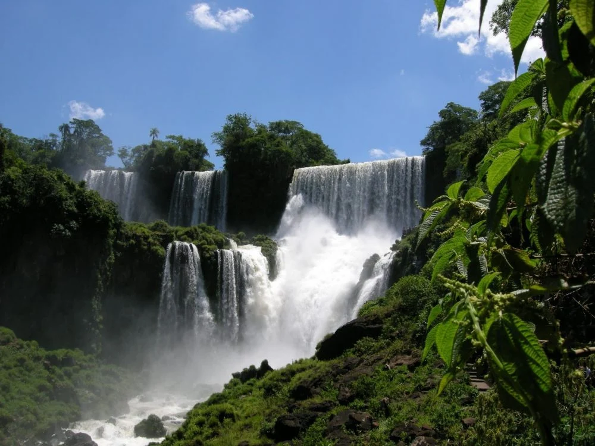
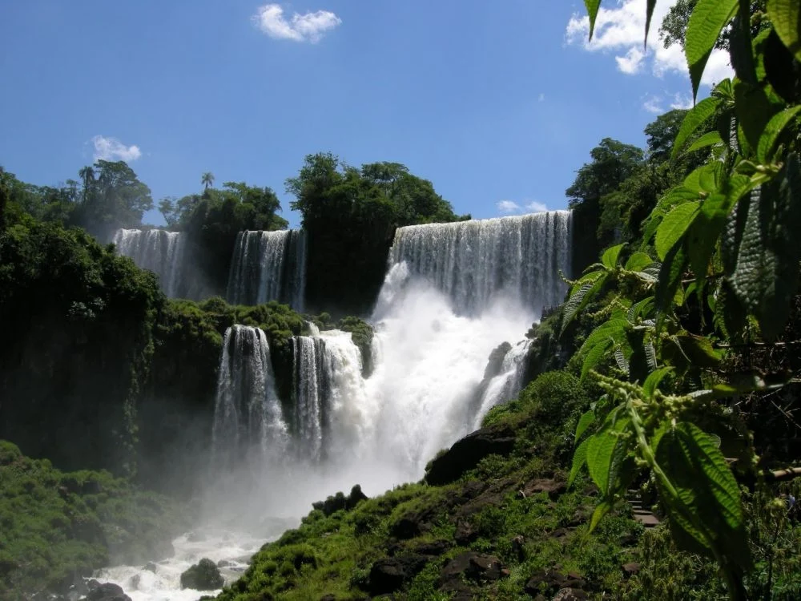
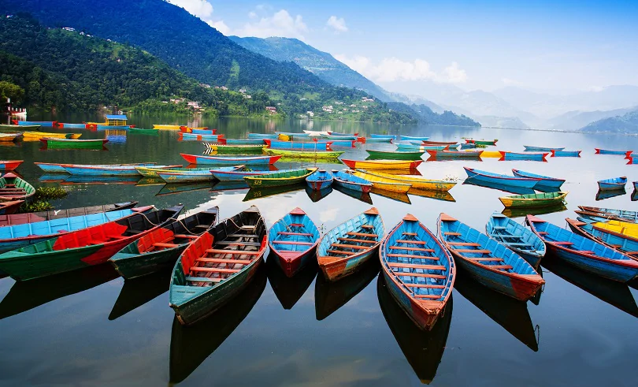
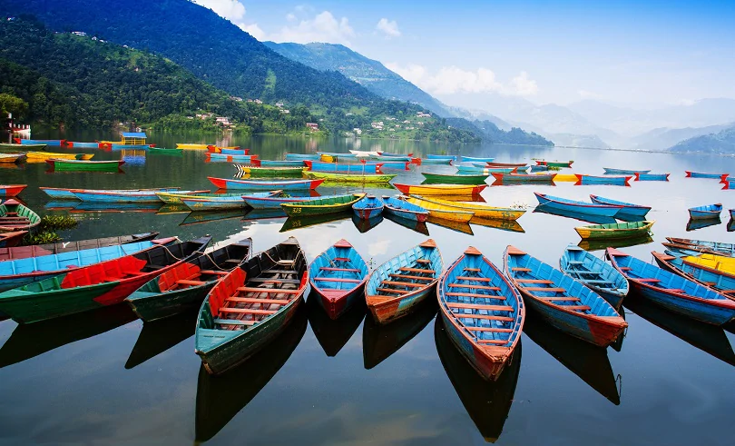
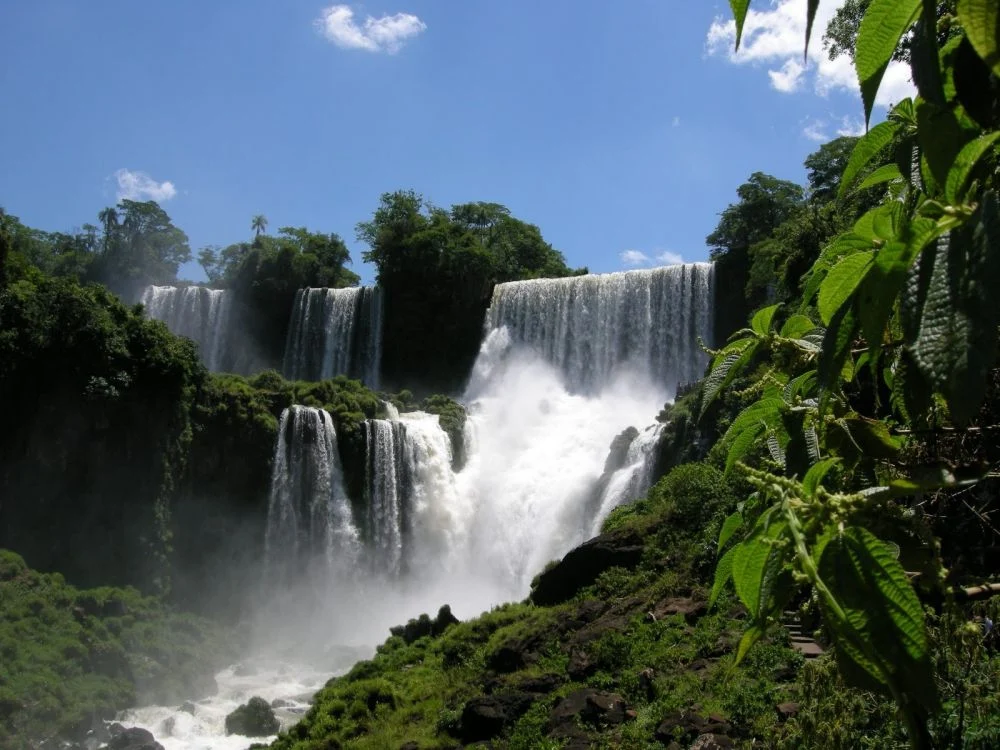
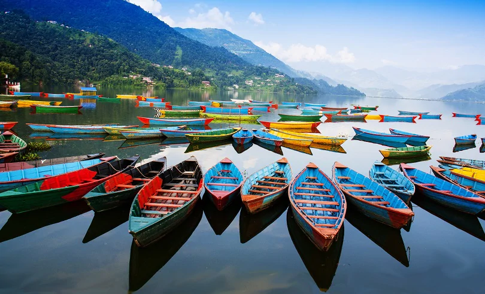

Gallery


 


 

Explore the culture, nature, and heritage of Africa and Asia.
Nomadic Trails invites travelers to journey through the enchanting landscapes of Nigeria, Nepal, and Afghanistan. Rooted in culture and community, each itinerary promises not only scenic beauty but also soulful encounters with local traditions, cuisine, and history. Whether it’s trekking Himalayan paths, exploring ancient Afghan cities, or experiencing the vibrant spirit of Nigeria, your story begins here.
Discover Kathmandu, Namche Bazaar, and serene Everest viewpoints. Buddhist temples, sherpa culture, and snowy peaks await you.
Experience Herat, Mazar-e-Sharif, and the timeless bazaars. Persian architecture and Silk Road stories enchant every traveler.
Visit Lagos, Yoruba villages, and natural reserves. From Afrobeat music to local cuisine, Nigeria pulses with vibrant life.
Explore Kathmandu, Namche Bazaar, and Everest viewpoints in this scenic trek through the Himalayas. Includes guided tours, accommodation, and meals.
Price: $1,299
Visit Herat, Kabul, and Mazar-e-Sharif to experience historic mosques, bazaars, and Persian architecture. A cultural immersion journey through Afghan history.
Price: $999
Enjoy the rhythms of Lagos, Yoruba villages, and safaris in Jos National Park. Experience Afrobeat music, dance, and cuisine.
Price: $1,499

